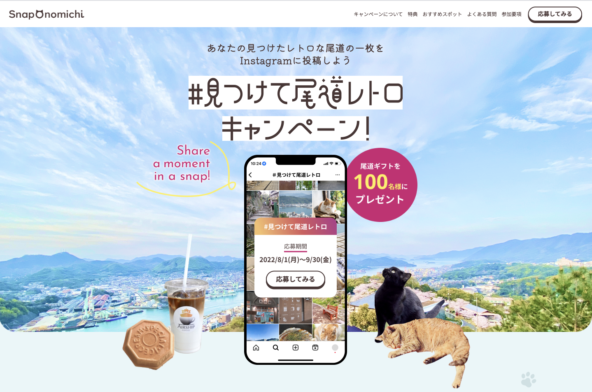
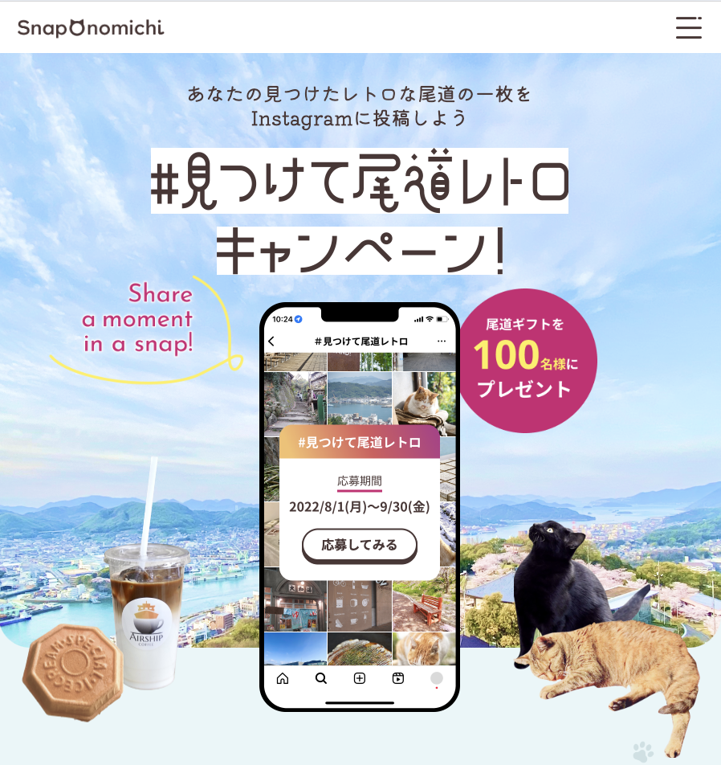
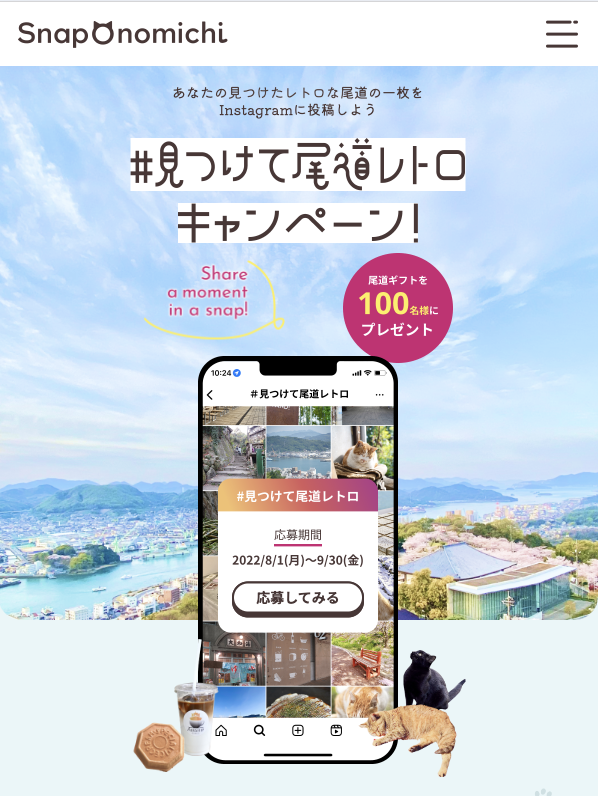
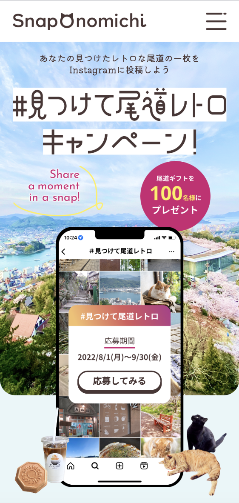

Snap Onomichi
架空の尾道キャンペーンサイトのLPです。
Figmaのデザインカンプをもとにコーディングを行いました。
-
制作期間36日(合計92時間)
-
使用スキルHTML/CSS/Sass/JavaScript/
jQuery/Swiper -
URL
-
GitHub
-
ターゲット尾道に来たことがある方や、これから訪れたいと考えている方
-
目的尾道の観光地や飲食店をキャンペーンを通じて知ってもらい、参加を促す
スマートフォン・タブレットサイズでは、jQueryを用いてハンバーガーアイコンをクリックするとドロワーメニューが上から表示されるように実装しました。
Q&Aセクションでは、jQueryを用いて、アコーディオンメニューを実装しました。
1番目は最初に開いている状態にしています。
キャンペーン特典のカード全体をクリックすると、
詳細カードがモーダル表示されるように実装しました。
Contactの入力欄として、テキストボックス・ラジオボタン・セレクトボックス・テキストエリア・チェックボックスのフォームを実装しました。
また、CSSで見栄えを整え、入力欄はフォーカス時に色が変わり、アウトラインが表示されるようにしました。
さらに、バリデーションエラーを実装し、エラーが発生した際には色が赤く変化するようにしました。
ホバーした時に画像が大きくなるアニメーションを実装しました。
実装箇所：キャンペーン特典のカード
ホバーした時に色が変化したり、アンダーラインが引かれたりするように実装しました。
実装箇所：ヘッダーナビ、ボタン、リンク、footerのアイコン
ブレイクポイントは、600px、900px、1200pxで設定しています。
これにより、さまざまな画面サイズに合わせてデザインを変更し、快適に使えるようにしています。
1440px
900px
600px
375px
-
スムーススクロールメニューを押すとスムーズにページがスクロールされるようにしました。
ヘッダーと被らないようにヘッダーの分だけ下げた位置に動くようにしました。 -
共通classセクションのタイトルやボタンには、共通のclass名を付けてスタイルを一貫させる工夫をしました。
-
TOPへ戻るボタンPCサイズのとき、ページが上から300px以上スクロールされるとボタンがふわっと表示され、
300px以下になると消えるようになっています。。ボタンを押すとなめらかにTOPへ戻るようにしました。 -
マップの埋め込みサイト内にGoogleマップを埋め込みました。
これにより、ユーザーが目的地へのアクセスを一目で確認できるようになります。
画像はスクロールしてご覧いただけます